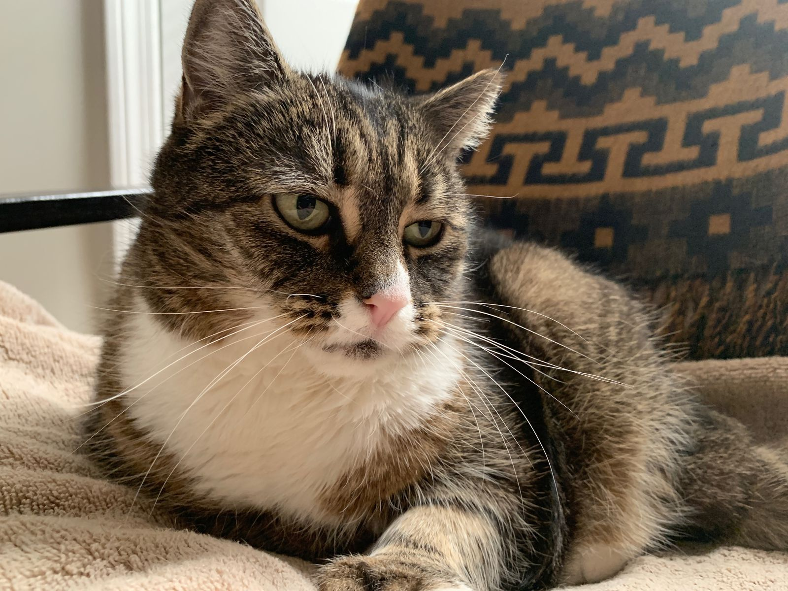

Taking some time to recharge
I've been on the west coast now for just over two weeks, almost all of which I would classify as intense adventuring. First skiing Tahoe, then walking San Francisco until my feet could no longer take it, then drinking my way through Napa with my dad, then hiking Joshua Tree for three days with my mom and David, and now wandering San Diego.
In my regular life, I can work long hours and fill my free time going out with friends, but I always have time for breaks. A typical day will usually include about thirty minutes of doing nothing with my cat. I often have a daily routine that is predictable, with few scheduling surprises. Now, without a routine I often find myself in a different city at the end of a day, constantly unpacking and packing my bags. More, I always have some big fears in the back of my mind: when and where will I get my next meal? If I get sick, where will I go and how will it impact my plans? It can be exhausting.

Originally, my plan for this trip was to know what it is like to not have anything to do, and being on the west coast away from home would be the ideal place to experience just that. Now that I am here, I am at risk of having too much to do, because I want to see everything where ever I am before I leave. Of course I will not see all of San Diego in three days, for example, but I want to make the best use of my time. I also want to keep up with this blog. While not directly time consuming, I can sometimes not be in the mood to write, and it can take an hour or two of staring at Wikipedia before I am.
What I am learning is that I require more time to recharge and relax than I originally thought. This morning I went to a yoga class for the first time in a few weeks. This evening I spent much of my time inside by myself. I know I can't go non-stop forever, and even though I might be missing some San Diego Friday nightlife, I also know that I cannot sustain myself on this trip without taking some quiet time for myself.
A few years ago, I read the book Quiet by Susan Cain. It could reasonably be referred to as the introvert's bible, as it describes the hidden power of introverts in a world that generally favors the extroverted. As a general rule of thumb, I don't tend to like labels like introvert and extrovert, as it risks pigeonholing people in a fairly rigid category. Rather, I prefer to describe people as having traits that fall within the model of introvert or extrovert or what have you. Having said that, I tend to have some traits of introversion and others of extroversion with more of the former. Cain describes such a person as an ambivert, and I feel that such a description reflects me fairly well.
Some have told me that ambiverts have the best of both worlds, but I've found there is more nuance to it. I cannot pick and choose. If I spend too many days at home reading, I get stir crazy. If I spend too much time out, I get mentally fatigued and need to retreat home. For me, I have come to realize that I need to context shift quite a bit. In my day-to-day life at home, it has become second-nature to me. In this new world of traveling the west coast with no routine and no particular schedule, I need to pay more attention to maintaining the right balance. Sometimes I'll need to do less to feel as if I've done more. I'd say that's a good insight to gain.